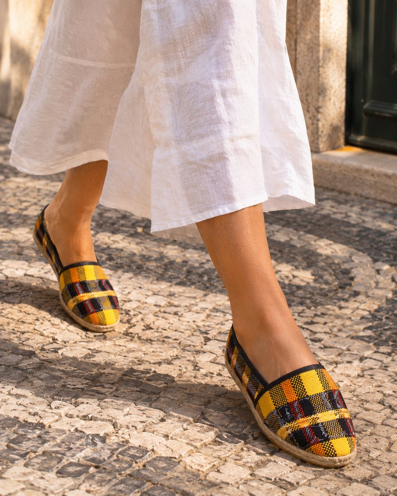
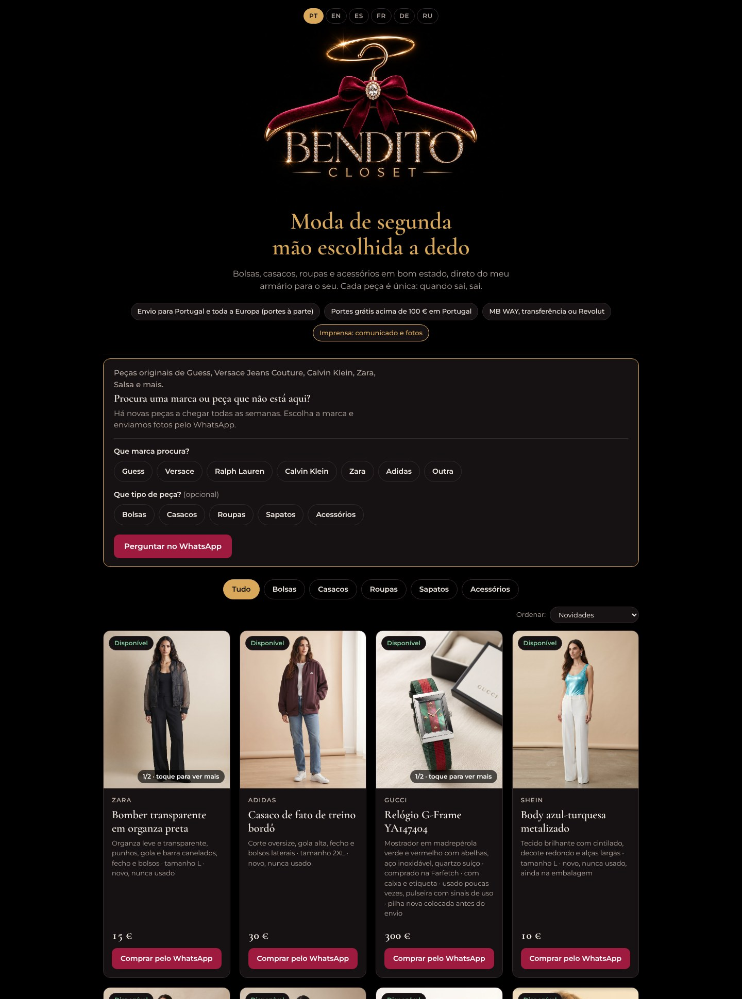

Com medo de burlas, ex-assessora de imprensa de moda cria sozinha a própria loja de moda em segunda mão, com provador de inteligência artificial que avisa se a peça não serve
Em vez de anunciar peças de marca nas plataformas de venda em segunda mão, Marianna Werneck, ex-assessora de imprensa de moda, construiu o Bendito Closet: pagamento seguro, reembolso automático e um provador virtual que diz à cliente, antes de comprar, se a peça vai ficar pequena ou grande. Agora abre também a vitrine a quem mora no Brasil.
Comunicado em PDF Comunicado em Word Ver a loja
Para a imprensa brasileira: o Bendito abre a vitrine para o Brasil
Novo: o Abra o seu closet, feito para quem mora no Brasil.
- Curadoria pessoal · a mulher manda fotos simples das peças pelo WhatsApp e escolhe com a Marianna até 5 peças de marca.
- Fotos com modelo · a Marianna cria as fotos e escreve as descrições de cada peça.
- Vitrine própria, em reais · uma página com o nome dela dentro do Bendito Closet, divulgada no Instagram da loja.
- Venda direta, por Pix · o botão "Comprar" abre o WhatsApp da dona do closet e a cliente paga direto a ela, com Pix ou como combinarem.
- 0% de comissão · o dinheiro das vendas é todo dela. Pacote de R$ 750 por até 5 peças, pago em reais, com Pix ou cartão.
Como funciona: benditocloset.pt/closet-brasil · Exemplo de closet: benditocloset.pt/closet-da-lu
A ex-assessora de imprensa de moda Marianna Werneck, que vive em Portugal há dez anos, criou sozinha o Bendito Closet, um brechó de marcas online com provador de inteligência artificial, quiz de estilo, jogo e revista próprios. Agora lança o Abra o seu closet: mulheres de todo o Brasil podem vender as suas peças de marca numa vitrine com curadoria, fotos com modelo e preços em reais, recebendo por Pix e sem comissão. benditocloset.pt/closet-brasil
O que há de novo (atualizado a 27 de novembro de 2026)
Tudo está no ar e a funcionar. O site não serve só para comprar: serve para brincar.
- Provador com inteligência artificial · a cliente escolhe uma foto sua e até 3 peças (roupa, sapatos, ténis ou malas) e, em cerca de 20 segundos por peça, vê-as vestidas no próprio corpo. Tecnologia de grande marca num brechó de uma pessoa só. benditocloset.pt/provador
- Qual é o seu estilo? · quiz de 5 perguntas com 5 perfis (Chique parisiense, Cool sem esforço, A noite é sua, Carioca de alma e Sporty luxe) e as peças do closet para cada um. benditocloset.pt/estilo
- Monta o look · a cliente escolhe as peças, põe a sua foto e vira capa de revista, pronta para o story. benditocloset.pt/monta-o-look
- Jogo da memória · encontrar os 8 pares de peças do closet dá 5% de desconto em todas as compras, também nas próximas. benditocloset.pt/jogo-da-memoria
- Bendito Edit · revista digital mensal feita só com peças do closet, em português e em inglês. benditocloset.pt/revista
- Abra o seu closet · outras mulheres, incluindo do Brasil, podem pôr as suas peças na vitrine do Bendito, com curadoria e fotos da Marianna. benditocloset.pt/closet-brasil
- Crie a sua loja · a Marianna também cria este tipo de site e experiências para outras pequenas marcas. benditocloset.pt/lojas
Vídeo de apresentação (51 s)
Nota pronta, se servir
Com medo de burlas nas plataformas de venda em segunda mão, a ex-assessora de imprensa de moda Marianna Werneck criou sozinha o Bendito Closet, uma loja online de peças de marca com pagamento seguro e reembolso automático. O destaque é um provador com inteligência artificial que mostra a peça vestida em quem compra e avisa, antes da compra, se vai ficar pequena ou grande. Mulheres que moram no Brasil também podem vender ali as suas peças, sem comissão. Em benditocloset.pt.
Novo: a revista Bendito Edit
Revista digital mensal com looks feitos só com peças do closet. Nº 01, dezembro de 2026: 4 looks para as festas, a peça do mês e presentes até 20 €. Ver online.
Revista em PDF · Português Magazine PDF · International edition (English)
Fotografias
Livres para publicação em artigos sobre o Bendito Closet. Clique em "Descarregar" para guardar cada imagem em separado.

Descarregar

Descarregar · Ver na loja

Descarregar · Ver na loja

Descarregar · Ver na loja

Descarregar · Ver na loja

Descarregar · Ver na loja


Descarregar · Ver na loja

Descarregar · Ver na loja
Descarregar · Ver na loja


Descarregar · Ver na loja
Descarregar


Descarregar

Descarregar

Descarregar

Comunicado de imprensa
Para divulgação imediata · Porto, 27 de novembro de 2026
Com medo de burlas, ex-assessora de imprensa de moda cria sozinha a própria loja de moda em segunda mão, com provador de inteligência artificial que avisa se a peça não serve
Em vez de anunciar peças de marca nas plataformas de venda em segunda mão, Marianna Werneck, ex-assessora de imprensa de moda, construiu o Bendito Closet: pagamento seguro, reembolso automático e um provador virtual que diz à cliente, antes de comprar, se a peça vai ficar pequena ou grande.
Marianna Werneck, que vive em Portugal há dez anos, tinha o roupeiro cheio de peças de marca usadas poucas vezes. Não as quis pôr à venda nas plataformas habituais por medo de burlas e por cansaço de publicar fotos peça a peça. Decidiu fazer ela própria a loja: o Bendito Closet (benditocloset.pt) está no ar, com pagamento por cartão, MB WAY e Klarna, envio para toda a Europa e uma série de experiências que tornam a compra numa brincadeira.
Uma loja feita para não haver burlas, de nenhum dos lados
As peças do Bendito Closet são caras e foram usadas poucas vezes: óculos e relógio Gucci, malas Versace, ténis Golden Goose, casacos Guess. Vender isso a desconhecidos numa plataforma aberta assustava a fundadora. Na própria loja, as regras são dela e protegem quem vende e quem compra:
- Pagamento só pelo site, com cartão, MB WAY, Apple Pay, Google Pay ou Klarna, processado pela Stripe. Não há transferências para desconhecidos nem «pague primeiro, envio depois».
- Cada peça é única e só se vende uma vez. Quando alguém abre o pagamento, a peça fica reservada 30 minutos; se a compra não for concluída, volta sozinha a estar disponível.
- Cancelar é automático. Enquanto a encomenda não sai, a cliente cancela no site e o dinheiro volta logo, sem mensagens.
- Devoluções e problemas com a entrega tratados no site, com etiqueta de devolução pronta e código de seguimento por e-mail.
- Defeitos escritos na descrição. Cada peça diz quantas vezes foi usada e o que tem, sem surpresas.
Todas as funcionalidades foram desenhadas e postas no ar pela própria Marianna, que hoje trabalha em tecnologia.
Um provador que poupa o constrangimento
O destaque é o provador com inteligência artificial (benditocloset.pt/provador). A cliente põe uma foto sua, escolhe até três peças e, em cerca de 20 segundos por peça, vê-as vestidas no próprio corpo.
Antes disso, indica o seu tamanho de roupa (do XS ao 3XL) e o número que calça. O site compara com a etiqueta da peça e avisa logo: «deve ficar pequena», «deve ficar grande» ou «fica mais larguinha». Quem veste XXL e está a olhar para um casaco L fica a saber antes de se apaixonar pela peça, sem ter de perguntar a ninguém. A IA mostra o estilo; o aviso trata do tamanho.
O resto da loja também foi pensado para divertir:
- Qual é o seu estilo? · quiz de 5 perguntas que mostra as peças certas para cada perfil.
- Jogo da memória · quem encontra os 8 pares de peças ganha 5% de desconto em todas as compras, também nas seguintes, somado aos 10% de boas-vindas na primeira compra.
- Monta o look · a cliente junta peças à sua foto e vira capa de revista, pronta para o story.
- Bendito Edit · revista digital mensal feita só com peças do closet, em português e em inglês.
- Peças emprestadas para produções · stylists e criadoras de conteúdo pedem peças até 7 dias, com contrato assinado no site e caução só retida no cartão.
Também para quem mora no Brasil
Com o Abra o seu closet (benditocloset.pt/closet-brasil), mulheres que vivem no Brasil podem vender as suas peças de marca na vitrine do Bendito, sem sair de casa e sem pagar comissão.
- Curadoria pessoal: a cliente manda fotos simples pelo WhatsApp e escolhe com a Marianna até 5 peças.
- Fotos com modelo e descrições feitas pela Marianna, numa página com o nome da cliente e preços em reais.
- Divulgação no site e no Instagram do Bendito Closet.
- Venda direta: o botão «Comprar» abre o WhatsApp da dona do closet, que recebe por Pix. O dinheiro das vendas é todo dela.
- Pacote de R$ 750 por até 5 peças, com Pix ou cartão.
Nas palavras da fundadora
«Tenho muito medo de burlas. As minhas peças são caras e foram usadas poucas vezes, e eu não queria anunciá-las nas plataformas de venda. Também me deu preguiça de ficar a publicar foto a foto. Então resolvi fazer eu mesma, e abrir espaço para outras pessoas venderem também.»
«Fui tendo ideias e quis que o site fosse divertido. O provador virtual é para quem se sente insegura: põe a sua foto e o seu tamanho, e se a roupa vai ficar pequena ou grande o site já avisa. Assim ninguém passa por um constrangimento. Pensei em tudo.»
«Agora o mais importante para mim é que o site fique conhecido.»
Sobre a Marianna Werneck · Vive em Portugal há dez anos. Foi assessora de imprensa de moda e hoje trabalha em tecnologia. No Bendito Closet escolhe cada peça, escreve as descrições com os defeitos e responde ela própria às clientes. Também cria lojas online e experiências deste tipo para outras pequenas marcas (benditocloset.pt/lojas).
Factos rápidos e contactos
- Loja: benditocloset.pt · Porto, com envio para toda a Europa
- Preços: desde 8 €; Black Friday com −15% em tudo até 29 de novembro
- Pagamento: cartão, MB WAY, Apple Pay, Google Pay e Klarna
- Kit de imprensa e fotografias: benditocloset.pt/imprensa
- Contacto: Marianna Werneck · ola@benditocloset.pt · WhatsApp +351 936 796 783 · Instagram @benditocloset.pt
Marianna Werneck, fundadora · ola@benditocloset.pt · WhatsApp +351 936 796 783
Disponível para entrevista.